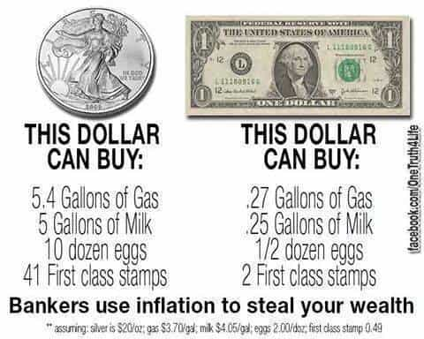

< < < Back
What The Next 25 Years Of Western Civilization Will Be Like – Return Of Kings
Gentlemen, one of the things that has always separated ROK from other websites is our ability to predict future outcomes. We successfully predicted virtually all of the following phenomena that have been happening over the last several years:
- Increasing bitchiness from unattractive girls
- More and more political correctness
- The “exodus,” where men have left the country in droves
- Donald Trump’s victory
Our uncanny ability to predict the future is due to its basis in principles and culture, as opposed to current events. In other words, we look at the current principles that are underlying American and Western culture, and project them to their natural end game.
This is how we’ve predicted the current culture war that we’re in, it’s how we’ve predicted the increasing epidemic of shit tests and flakiness, and it’s how we’ve predicted the slow, but steady descent into hell that the West has made. It is with all of these things in mind, that I would like to present my personal predictions for the next several decades. I will aim to cover all spheres, from social to economic.
First: Underlying Causes

Technology, unbeknownst to most, is serving as an amplifier. Rather than simply dumbing everyone down, as most think, it’s actually doing two things:
- Making the smart even smarter, the masculine even more masculine, and the “red-pilled,” even more red-pilled.
- Making the dumb even dumber, the effeminate even more effeminate, and the “blue-pilled,” even more blue-pilled.
The reason being that technology is a tool, and the way that it’s used is to be determined by the user. Where some angry, obnoxious feminazi (literally Hitler) might use her internet to seek out Tumblr pages supporting her views, and YouTube videos of cis-scum being “destroyed” in a debate, other men are using technology to do the following:
- To seek out alternative news sources that don’t lie and manipulate
- To educate themselves on matters of game, finance, and politics
- To connect with like-minded individuals
This drastic and increasing divide in socioeconomic influence, intelligence, masculinity, and awareness is one of the major foundations which I’ve built my predictions upon. Other assumptions are that around 1/3 the population is starting to doubt the MSM, men are always more effective at creating structures than boys or women, and that the majority of men are actually good (or will be good if presented the chance), but have had to hide it due to social pressures.
2017-2018: All Hell Breaks Loose

I won’t harp too much on Donald Trump, because I realize that many readers are tired of hearing this, but I believe that his presidency will set off a chain of events that will be absolutely tantamount to saving the West. His presidency will do several things:
- Start the process of “draining the swamp,” or dismantling MSM and ridding our political and school systems of hyper-Leftists
- Begin to repair the lack of masculinity that most men in our country have been conditioned to accept
- Finally, and most importantly, begin the process of eliminating anti-free speech laws (aka political correctness)
I believe that the globalists will try to do everything that they can to fight against this, but, as history has shown us, the angry mobs will be at their doors soon enough. The elites will continue to do what they’ve done in the past, but this time, they’ve got a trick up their sleeve.
Ever since 2008, the Federal Reserve’s quantitative easing policies have been pumping the monetary supply full of more and more fiat currency. I won’t go into detail here, but anyone with a modicum of historical economic knowledge knows that this is a bad thing.
I predict that we will experience a major crash, far worse than 2008, which will start sometime in mid to late 2017. This will then, of course, be blamed on Trump’s presidency, but the deplorables will know better: this has been due to the meddling of the central bankers.
Regardless, tensions will reach an all time high as degenerates don’t receive their welfare checks, and as home owners default on their loans. Expect rioting in a large number of American cities. The suburbs will be relatively protected, but anywhere with a large lower class population will be decimated (think Black Lives Matter, but on a much larger scale).
This will likely force Trump to reluctantly call in Marshall Law, which in turn will create even higher tensions. Expect to see elements of the patriarchy re-emerge on a local level. The men in various neighborhoods and families will bond together to ration out food, water, and protection. The women will be tasked with homely duties, as it will be deemed too dangerous to walk the streets alone.
Although this may sound terrible, it’s actually a good thing. It will start to bring back the patriarchy on a very fundamental, grass-roots level—in our own neighborhoods. This is the catalyst that we will need to bring about the return of a traditional society, living in accordance with nature’s biological laws.
2019-2025: Transition to Economic Fundamentals

As Trump expertly handles the economic crisis, I expect us to return to some form of the gold standard to bring relative economic stability. This may take the form of various men bartering with silver and gold, as our fiat currency’s hyperinflation will become very readily apparent, or it may simply be that every US dollar becomes redeemable for a fixed amount of gold.
Either way, I urge you to learn How to Invest in Precious Metals Stocks so that you’re prepared when the economic crash comes. As we begin to emerge out of this economic catastrophe near the end of Trump’s first term, expect there to be a lot of anti-Trump sentiment. By this point, however, the MSM will have been almost entirely discredited, so despite the remaining MSM desperately trying to paint The Donald as a horrible president who caused the crisis, we will know better.
As I said in my assumptions, previously only 1/3 of the population distrusted the MSM—by now it will be almost 2/3, which will usher about the final death of the MSM. This will be a natural, grass-roots effect of more and more people spreading news organically (through video footage, word of mouth, etc.), which means that it is a movement that won’t be stopped.
As mainstream news conglomerates such as MSNBC, CNN, and CNBC begin to lose relevancy, expect alternative news sites to start evolving into full blown operations with anchors, high tech cameras, live streaming, and more. I believe that we will also begin to reclaim our airwaves, either through the existing infrastructure within the FCC or by creating our own, in order to ensure that censorship is not possible.
Donald Trump will almost definitely win a second term, again in large part due to the alt-right, the manosphere, and various alternative news sources spreading the truth. This, I believe, will begin to usher in a new era for America, similar to the transition between the Roman Republic and the Roman Empire.
2026-2032: Reclaiming Patriarchy on a Local Level
Expect local men to come together.
As the patriarchy has now been brought back on a local level, Trump has eliminated political correctness with the help of others like Breitbart, Milo Yiannopoulos, and ROK, and the MSM has lost all credibility, expect local men to start taking back their school systems as well.
The economic crisis will have made it abundantly clear that we need to teach men survival skills, and this will fall into the hands of local men. Expect home schooling to become more and more common, until eventually, private schools start popping up everywhere taking advantage of this new anti-Leftist sentiment.
The same bonds that men formed with their neighbors and tribal members during the economic crisis will now be used to create communities where children play, learn, and grow together. This will start to form a sort of crude educational system on a very local level, which emphasizes the importance of men being able to protect their families, self-reliance, real world skills, and independent thought.
I expect the entire US educational system to undergo a complete overhaul, which will cement America’s position as the greatest country in the world once again. I believe that our educational system will evolve to look something like this:
- Male/female segregation for at least part of the school day
- More recess, especially for boys
- Femininity is encouraged in women, and primal masculinity is encouraged in men
- A curriculum based around the Greek system (a heavy emphasis on logic, rhetoric, and debating skills)
- No more PC culture and Leftist teachers indoctrinating our children.
An educational system like this will emerge, simply because a severe economic crash and large amount of social upheaval will make more and more men wake up and realize the importance of gender differences, self-reliance, and tribal bonds. Men that value these things do not want their children to go to some PC school that brainwashes them, plain and simple.
2033-2040: National Patriarchy Emerges
Out of the ashes of our old America, a new one will emerge
As patriarchy becomes more and more popular on a local level, it will begin to foster an entire culture based around the values that made America so successful in the past. Some might say that the President who’s elected will determine everything, but I disagree.
I believe that a large economic crisis which forces men to band together and form civilized tribes will bring about a severe blow to the establishment. It won’t matter who promises us what, because voting will be based upon how much we trust candidates. In other words, the local patriarchy which this severe economic crisis in 2017 will have created, will begin a grass-roots transition into being a full blown cultural shift all throughout America.
This will reflect who is elected on a national level. By now, all the cards will be in our favor:
- Masculinity will have re-emerged in a grass roots fashion
- The MSM will be dead, and the new alternative media will become the mainstream
- Conservative values like self-reliance and independence will be at an all time high
- Our economy will be primed for massive growth
- A new, conservative leader will charge the path to greatness
Expect America to once again become the world’s greatest nation, with incredibly intelligent children, highly masculine men, a booming infrastructure and economy, and most importantly, a traditional culture.
Summary
I could easily write a ten part article on this topic, because it’s incredibly deep and multi-faceted, but I won’t. If you start to look around you closely, however, I believe you will come to the same conclusion as I have.
Take a cursory glance at the nationalist movements that have been occurring since Nigel Farage set off a chain of events with Brexit. First it was Britain, then the entire UK, then Donald Trump, and now France is consider a highly nationalist leader in their 2017 election?
It’s very clear that the world is starting to wake up and fight back against the globalists—and as I hope I’ve made clear, the globalists will not win, for one simple reason: their movement is artificial and ours is organic.
That which happens out of natural biological tendencies is always far more powerful than an attempt to control them, due to the natural resistance effect. When you align your cause with what is natural (as the manosphere has), there is an inherent power within it due to its truthfulness, that cannot be stopped.
Read More: Donald Trump’s Presidential Campaign Is The Biggest Political Uprising In Decades